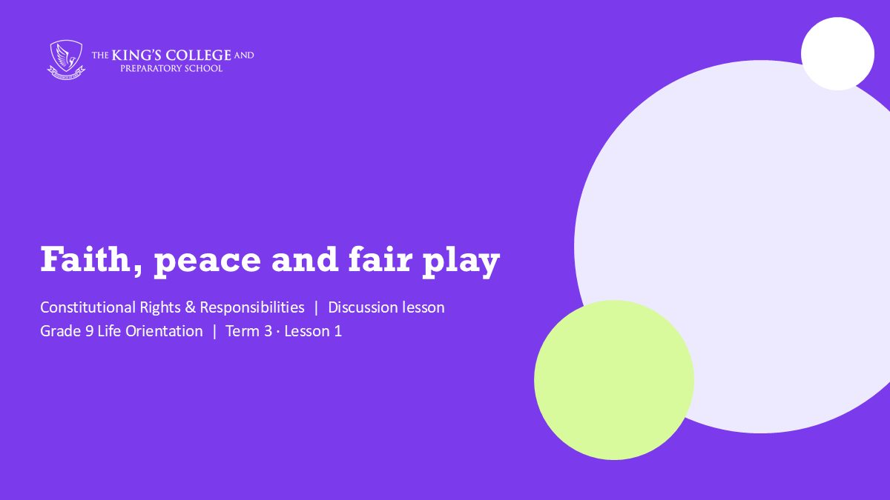

Term 3 · Lesson 1 · Discussion lesson
Faith, peace and fair play
Start here
Today I will
- Explain how faith communities in South Africa contribute to peace
- Describe the Christian call to be a peacemaker
- Distinguish between sportsmanship and gamesmanship
In a final, a player dives to win a penalty in the last minute and his team wins. Clever play, or cheating?
Words to Know
| Word | Meaning |
|---|---|
| Peace | More than no fighting: harmony, safety, justice and right relationships between people. |
| Peacemaker | Someone who actively works to bring people together and resolve conflict. |
| Freedom of religion | The right (section 15 of the Constitution) to hold and practise your own faith. |
| Ethics | Principles about what is right and wrong that guide how we behave. |
| Sportsmanship | Competing fairly and with honour, and respecting opponents and officials. |
| Gamesmanship | Trying to win at any cost by bending or breaking the rules (e.g. diving, taunting). |
Slides

Videos
Notes
South Africa is home to people of many faiths, and the Constitution protects everyone's freedom of religion. Faith communities have played an important part in building peace in our country. At King's we learn from a Christian point of view: Jesus calls His followers to be peacemakers. Peace and fairness also matter on the sports field, where ethics decide whether we compete with honour or try to win at any cost.
What is peace?
Peace is more than the absence of fighting. True peace includes safety, justice, respect and right relationships between people, with God and with creation. The Hebrew word shalom means wholeness: everything as it should be. A peacemaker does not simply avoid conflict (that is keeping the peace); a peacemaker actively works to bring people together, to heal hurt and to resolve conflict fairly.
Freedom of religion in South Africa
Section 15 of the Constitution gives everyone the right to freedom of conscience, religion, thought, belief and opinion. Section 31 protects the right of religious communities to practise their faith together. With this right comes a responsibility: to respect people whose beliefs differ from ours, never to mock or attack them, and to live peacefully as neighbours. Respecting a person does not mean we must agree with all their beliefs; it means we treat them with dignity.
How faiths in South Africa teach peace
Most South Africans are Christian, and many other faiths are practised here too. Each has teachings about peace. These are short, factual summaries:
| Faith | Holy book(s) | Teaching about peace |
|---|---|---|
| Christianity | The Bible | God made peace with people through Jesus; Christians must love their neighbour (and even their enemies), forgive and be peacemakers. |
| Judaism | The Tanakh (Hebrew Bible) and Talmud | Shalom: peace and wholeness; seeking justice and pursuing peace. |
| Islam | The Qur'an | The word Islam is linked to salaam (peace); Muslims greet each other with 'peace be upon you' and are taught justice and charity. |
| Hinduism | The Vedas and Bhagavad Gita | Ahimsa: non-harm to all living things. |
| Buddhism | The Tripitaka | Non-harm, compassion and calming the mind. |
| African Traditional Religion | Oral tradition (no single written book) | Harmony in the community and Ubuntu: 'I am because we are'. |
How faith communities contribute to peace
- Teaching values: love, honesty, forgiveness, self-control and respect for life shape how members treat others.
- Reconciliation: after apartheid, faith leaders helped to heal the nation. Archbishop Desmond Tutu chaired the Truth and Reconciliation Commission (TRC), where victims could tell their stories and those who committed crimes could confess.
- Service: faith-based organisations run feeding schemes, shelters, counselling, care for the sick and disaster relief. Gift of the Givers, founded by Dr Imtiaz Sooliman in 1992, helps people of all backgrounds in disasters.
- Speaking out together: leaders of different faiths often speak with one voice against crime, gender-based violence and corruption.
- Mediation: churches and other faith groups help families and communities resolve conflicts.
- Hope: faith gives people hope and purpose, which helps communities keep going in hard times.
The Christian call to be a peacemaker
Jesus said: 'Blessed are the peacemakers, for they will be called children of God' (Matthew 5:9, NIV). Christians believe that true peace starts with peace with God through Jesus, and that this changes how we treat others. Romans 12:18 says: 'If it is possible, as far as it depends on you, live at peace with everyone.' Peacemaking in daily life means listening before reacting, forgiving, apologising, standing up for someone who is being treated unfairly, and refusing to spread gossip.
Ethics in sport
Ethics are principles about what is right and wrong that guide how we behave. In sport, ethics decide how we play, win and lose. Four values of fair play: honesty (no cheating or faking), respect (for opponents, officials, teammates and the game), fairness (everyone plays by the same rules) and self-control (managing anger and pride).
| Gamesmanship (win at any cost) | Sportsmanship (compete with honour) |
|---|---|
| Diving or faking an injury | Playing honestly, even when the referee misses something |
| Doping: using banned substances | Training hard and competing clean |
| Sledging, taunting or trash-talking | Shaking hands and respecting opponents |
| Arguing with or abusing officials | Accepting decisions and appealing the right way |
| Ball tampering or bending the rules | Following the rules and the spirit of the game |
| Showing off after winning, sulking after losing | Winning humbly and losing graciously |
A code of conduct is a set of rules about behaviour that players, coaches, parents and spectators agree to follow. In 2018, a ball-tampering incident during a Test match in Cape Town led to international players being banned, showing that cheating can damage careers and a whole team's reputation. In South Africa, the South African Institute for Drug-Free Sport (SAIDS) tests athletes for banned substances.
Why sport ethics matter
- For players: protects health (no doping), builds character and self-respect.
- For teams: builds trust and a good reputation.
- For spectators and younger players: sportsmen and women are role models.
- For the game: if cheating wins, the sport loses its meaning and its fans.
Respecting people of other faiths
At King's we believe that Jesus is the way to God, and we teach from a Christian point of view. At the same time, the Bible teaches us to treat every person with love and respect, because every person is made in God's image. In South Africa, people of different faiths live, study and work side by side. We can talk honestly about what we believe and why, while listening respectfully, never mocking another person's faith and standing up for their right to practise it. That is what freedom of religion looks like in daily life.
Forgiveness and reconciliation
Forgiveness means choosing not to hold a wrong against someone, even when it hurt you. It does not mean pretending the wrong didn't happen, or that there should be no consequences. Reconciliation goes further: it is when people who were divided rebuild a relationship. After apartheid, the Truth and Reconciliation Commission gave victims a chance to be heard and asked people who had committed crimes to tell the truth. Archbishop Tutu often said that there is no future without forgiveness. In your own life, an honest apology and a real change in behaviour are the first steps towards reconciliation.
Case study: Aarav's cricket match
Aarav's team was struggling in a tight cricket match. A teammate quietly suggested roughing up one side of the ball with a bottle cap while the umpire wasn't looking, because 'everyone does it'. Aarav felt pressure: he wanted to win, and he didn't want to seem like a goody-goody. He remembered what Coach Des had told the team at the start of the season: 'If you have to cheat to win, you haven't won.' Aarav said no and told his teammate he would rather lose fairly. The team lost by eight runs. After the match, the opposing captain shook Aarav's hand and said he respected the way their team played. Coach Des told the team he was prouder of them than after some of their wins.
Questions to think about: What was the ethical problem? Which values did Aarav show? What could the consequences have been if they had tampered with the ball and been caught?
Worked exam answers
Question: Distinguish between sportsmanship and gamesmanship. (1 x 2) (2)
Answer: Sportsmanship is competing fairly and with honour, respecting opponents and officials ✓ whereas gamesmanship is trying to win at any cost by bending or breaking the rules, e.g. diving ✓.
Question: Analyse how faith communities contribute to peace in South Africa. (1 x 4) (4)
Answer: Faith communities teach values such as love for your neighbour and forgiveness ✓ which encourage their members to resolve conflict peacefully ✓ especially in a country with a history of division ✓ so people are more willing to work for reconciliation and live peacefully with others ✓.
Be able to explain freedom of religion and its responsibility, describe ONE teaching about peace from a faith respectfully and factually, analyse how faith communities contribute to peace in SA, and distinguish between sportsmanship and gamesmanship with examples.
Peace takes work: respect others' faith, play fair, and be a peacemaker.

'Blessed are the peacemakers.' What is the difference between keeping the peace (avoiding conflict) and making peace? Where could you be a peacemaker this week?
In class: Fair play scenarios
- Scenario 1: Thabo is fouled in a basketball game; the referee doesn't see it. A teammate says: 'Get him back next play.'
- Scenario 2: Aarav's cricket teammate suggests roughing up one side of the ball when the umpire isn't looking.
- Scenario 3: Mia's netball team is losing and some parents start shouting at the umpire.
- Choose ONE: name the ethical problem and the value at stake (honesty, respect, fairness or self-control).
- What would a peacemaker do? Write two realistic actions.
Test yourself
- What does freedom of religion mean?
- Distinguish between sportsmanship and gamesmanship.
- Name ONE way faith communities promote peace in South Africa.
Show answers
1. The right to hold and practise your own faith (section 15), while respecting others' beliefs. 2. Sportsmanship is competing fairly and with honour, whereas gamesmanship is trying to win at any cost by bending the rules. 3. e.g. teaching forgiveness, reconciliation work (TRC), feeding and disaster relief, speaking out together against violence.
Finished early?
Write a code of conduct a Grade 9 team could really sign.
- Think of a King's team, e.g. basketball, cricket or netball.
- Write five rules for players, using the four fair-play values: honesty, respect, fairness and self-control.
- Add one rule for spectators or parents.
- Underline the rule you think would make the biggest difference, and write why.